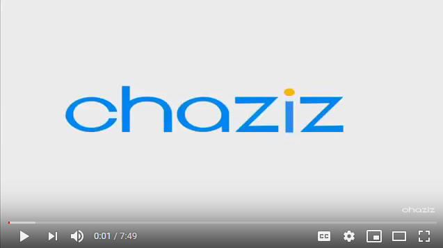
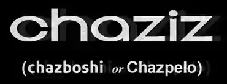

Background: The 6th Chaziz logo has a lot of varients, for some reason.
Variant 1 (June 2018)
Nicknames: "Chaziz had a Outfit7 phase"

Logo: The dot of the "i" falls. when it hits the other part of the "i", "chaz z" appears, forming "chaziz"
Music/Sounds: The current Outfit7 intro in a different pitch.
Availability: Near-extinction, It was only used in two videos, which are very low quality.
Variant 2 (October 2018)
Nicknames: "Shaky Chaziz"

Logo: The Chaziz name appears. below it, "chazboshi", the planned (but cancelled) new name of Chaziz is seen along with the old "Chazpelo" name. The text jumps a bit due to a customized HitFilm TV Damage effect being added.
Availability: Only appeared once on ChazizYT.wmv. It's also the only video where "Chazboshi" can be seen.